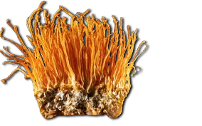
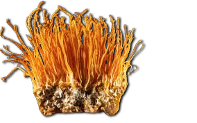

Descripción morfológica
Cordyceps militaris, conocido como "hongo oruga anaranjado", es un ascomiceto entomopatógeno de la familia Cordycipitaceae. Sus cuerpos fructíferos (2-8 cm de altura) emergen de pupas de insectos (principalmente mariposas y polillas), formando estructuras claviformes de color naranja brillante a rojizo. El estroma (parte fértil) tiene superficie verrugosa por los peritecios (estructuras reproductoras), mientras la base se une al huésped mediante rizomorfos blancos. Las esporas son filiformes, hialinas, y se dividen en partículas secundarias (3-5 × 1-2 µm) para facilitar dispersión.
Características distintivas
- Coloración: Pigmentos carotenoides (cordicepina y ácido cordicépico) dan tonos anaranjados.
- Estructura: Estroma carnoso con punta más pálida donde se producen las esporas.
- Hospedadores: Principalmente pupas de Lepidoptera (Noctuidae, Geometridae).
- Diferencias: Más pequeño y brillante que C. sinensis (que infecta larvas de Thitarodes).
Distribución y hábitat
Especie cosmopolita presente en bosques templados y tropicales de Asia, Europa y América. Crece en suelos ricos en humus de bosques caducifolios (robledales, hayedos), entre 500-3,000 msnm. Requiere humedad relativa >80% y temperaturas entre 15-25°C para fructificar (mayo-octubre en el hemisferio norte). Su distribución sigue la de sus huéspedes, siendo más abundante en áreas con alta densidad de Lepidoptera. En cultivo artificial no necesita insectos, desarrollándose en sustratos granulares.
Ciclo de infección
- Las esporas germinan sobre la cutícula del insecto, penetrando mediante enzimas quitinolíticas.
- El micelio coloniza el cuerpo, consumiendo tejidos no vitales hasta matar al huésped.
- En condiciones húmedas, emerge el estroma fructífero desde la cabeza o segmentos del insecto.
Composición bioquímica
Contiene compuestos bioactivos únicos: cordicepina (3'-desoxiadenosina) con actividad antitumoral e inmunomoduladora, ácido cordicépico (esterol con efectos hipoglucemiantes), y polisacáridos β-glucanos. La cordicepina inhibe la síntesis de ARN/ADN en células cancerosas (IC50 = 0.5 µM para leucemia HL-60). Cada gramo de hongo seco contiene 8-12 mg de cordicepina, 5-8% de polisacáridos, y 20-25% de proteínas (incluyendo todos los aminoácidos esenciales).
| Compuesto | Concentración | Propiedades |
|---|---|---|
| Cordicepina | 0.8-1.2% peso seco | Antileucémica, antiviral (inhibe replicación HIV) |
| Polisacáridos | 5-8% | Inmunoestimulantes (aumentan IL-2, IFN-γ) |
Cultivo artificial
Se produce industrialmente en sustratos de arroz integral/germinado (70% humedad) o medios líquidos. El proceso requiere:
- Fase I: Incubación a 25°C en oscuridad (15 días para colonización micelial).
- Fase II: Inducción de fructificación con luz azul (450 nm) y temperatura 18-20°C.
- Rendimiento: 300-400 g de hongos frescos por kg de sustrato (ciclo de 45 días).
Usos en medicina tradicional
En la Farmacopea China se usa para:
- Fatiga crónica y debilidad pulmonar (equivalente a C. sinensis pero más asequible).
- Mejorar oxigenación sanguínea (aumenta ATP en eritrocitos).
- Regulación glucémica (aumenta sensibilidad a insulina).
Investigación actual
- Ensayo clínico Fase II para leucemia linfocítica crónica (NCT00709215).
- Nanoencapsulación de cordicepina para aumentar biodisponibilidad oral.
- Uso en enfermedades neurodegenerativas (modelos Alzheimer en ratones).
Precauciones
- Evitar en embarazo (efectos abortivos en dosis altas en animales).
- Posible interacción con anticoagulantes (contiene derivados adenosínicos).
- Alergias reportadas (0.3% de usuarios, especialmente a esporas inhaladas).